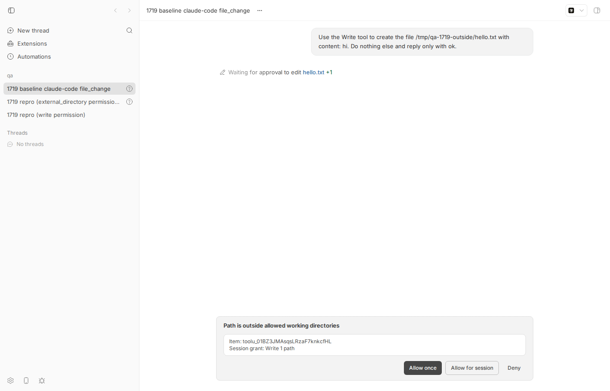
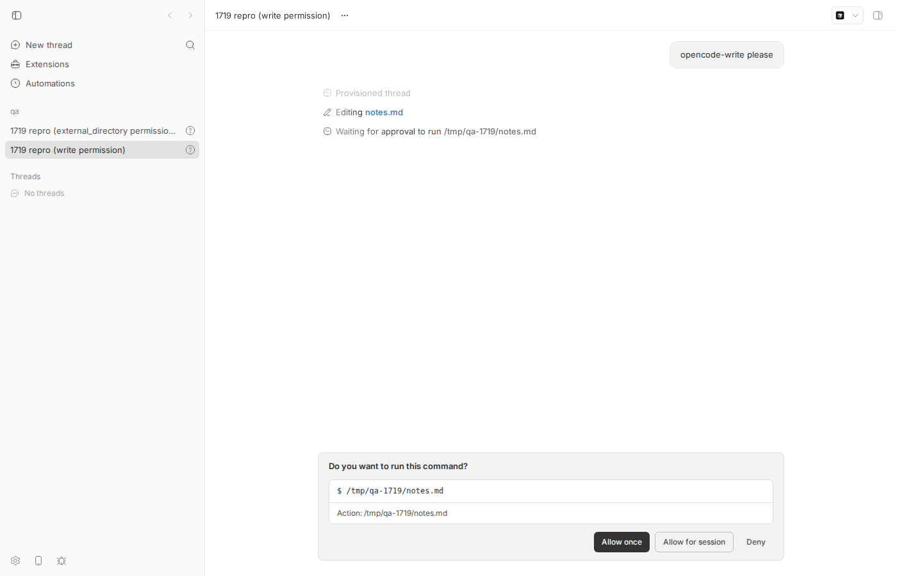
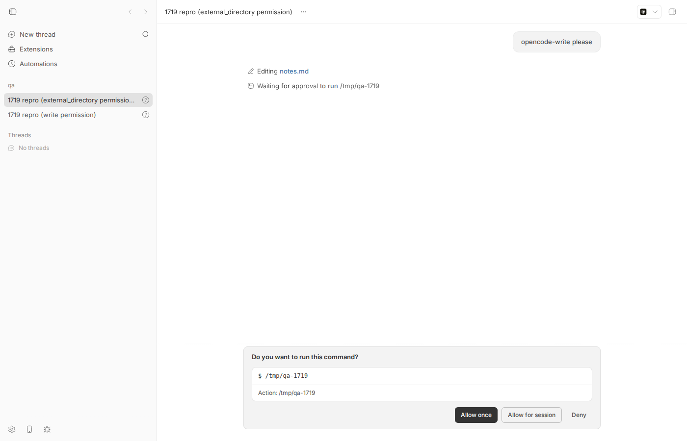
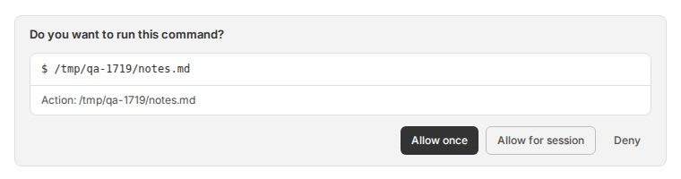
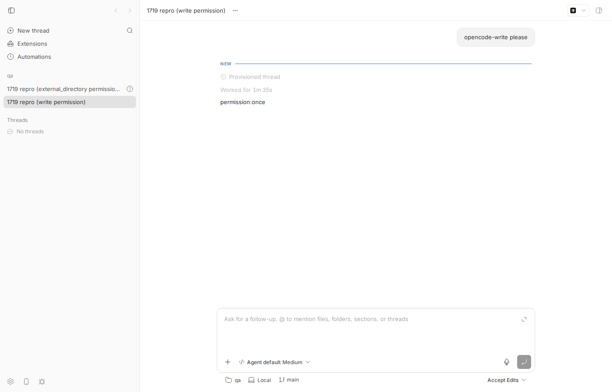
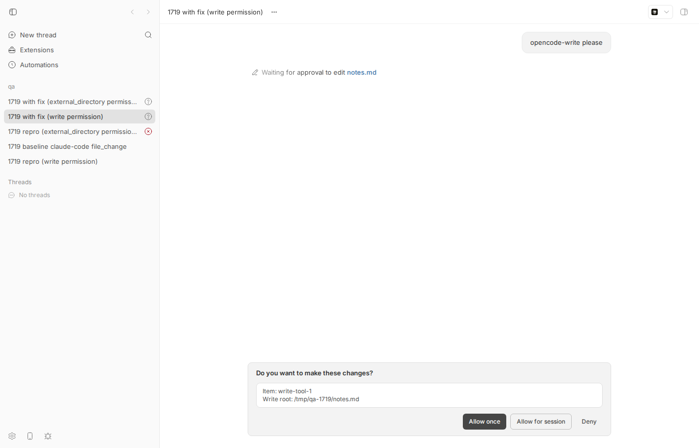
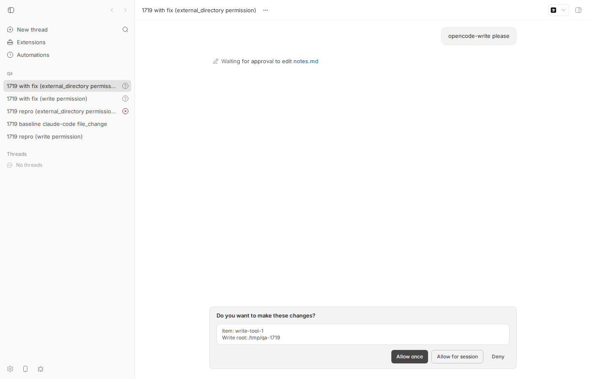

#1719 · ACP file-write approvals present as command approvals carrying a bare directory path
TL;DR
Plain-language framing. bb can drive third-party coding agents over ACP (Agent Client Protocol). When such an agent wants to do something that needs the user's OK, it sends bb a session/request_permission message that includes a description of the tool call: an id, a title, a kind (execute, edit, read, …), file locations, and the raw tool input. bb's ACP bridge (plugins/provider-acp) turns that into a canonical "pending interaction" that the app, the CLI and the SDK render. Pending interactions have a subject kind: command ("Do you want to run this command?"), file_change ("Do you want to make these changes?"), permission_grant, or plan.
The bridge ignores the ACP tool call's kind and locations entirely and always builds a command subject whose command string is rawInput.command ?? title ?? kind. For a write, opencode (and any other agent) sends no rawInput.command, and its title is the file path (for a write/edit permission, ACP kind: "edit") or the bare parent directory (for opencode's external_directory permission, which opencode tags ACP kind: "other"), so the user is asked "Do you want to run this command? $ /tmp/qa-1719/notes.md" or "$ /tmp/qa-1719". The server materialises a command subject as a commandExecution timeline item using the ACP tool-call id, so the row that the agent's own tool_call notification had just started as a fileChange ("Editing notes.md") flips to "Waiting for approval to run /tmp/qa-1719/notes.md" (or "… /tmp/qa-1719"), and flips back to a fileChange only when the agent's post-approval tool_call_update arrives with the diff. Approval/denial itself works; only the presentation is wrong.
Reproduced end-to-end on the base commit for both opencode permission shapes with a fake ACP agent registered via customAcpAgents that emits exactly what opencode's ACP layer emits, and with a 2-case unit test against the mapping function that fails on main. A ~70-line mapping change in plugins/provider-acp (below) makes both requests render as a file_change approval, matching what Claude Code produces natively for a write; verified in the app and via bb thread interactions list.
Claims vs findings
| Claim | Status | Evidence |
|---|---|---|
| ACP file-write permission renders as a command interaction | Verified | GET /api/v1/threads/<id>/interactions returns subject.kind: "command" for a kind: "edit" ACP permission (repro step 6). App shows "Do you want to run this command?" (screenshot). Mapping at interactions.ts:69-90 hard-codes kind: "command". |
| The "command" is a bare directory path | Verified | The command string is rawInput.command ?? title ?? kind (interactions.ts:55-66). opencode sets rawInput.command only for bash/shell. Its write/edit permission has title = file path (ACP kind edit) and yields $ /tmp/qa-1719/notes.md; its external_directory permission (a write outside the project) has title = parentDir and ACP kind other (opencode's toToolKind has no case for it, see opencode-acp-tool.ts) and yields exactly the bare directory $ /tmp/qa-1719 (repro step 6, second variant; screenshot). Both variants reproduced against the base commit with a fake agent that mirrors those two shapes; real opencode is not installed here. |
Timeline shows the item as commandExecution until approval upgrades it to fileChange | Verified | Event dump before approval: item/started fileChange write-tool-1 (from the ACP tool_call) followed by item/started commandExecution write-tool-1 command="/tmp/qa-1719/notes.md" approvalStatus=waiting_for_approval; after Allow once: item/completed fileChange write-tool-1 with the diff. Same item id, so the UI row flips type twice. Server side: pending-interaction-timeline.ts:220-249. |
| The approval itself works | Verified | Allow once in the app and bb thread interactions approve both settle the ACP request (agent echoed permission:once; fileChange completed with diff). |
Fix is a small mapping change in plugins/provider-acp | Verified | Patch in 1719/repro/proposed-fix.patch (2 files, +72/−1: forward locations in the bridge, classify by kind/locations in the mapping); no server, protocol, or schema change: file_change is already a legal subject in the canonical payload and the wire shape is unchanged. Covers both the edit-kind and the other-kind-with-locations (external_directory) shapes. |
| Observed with opencode; pre-existing | Unverified (opencode) / Verified (pre-existing) | opencode is not installed on this machine, so I reproduced with a fake ACP agent that mirrors opencode's ACP output. The identical mapping existed before #1640 in packages/agent-runtime/src/acp/adapter.ts (git show c5b53caab^:packages/agent-runtime/src/acp/adapter.ts, ~L1531-1550) and is unchanged on origin/main today. |
{kind=link}
{kind=link}
Environment
- bb
16ceb3a54(main, 2026-08-18) in worktree/home/USER/projects/bb/.claude/worktrees/wf_570fde41-63f-5(revision run; the first run usedwf_242c3e11-a10-34).origin/mainchecked ata108fa7ef:git log 16ceb3a54..origin/main -- plugins/provider-acpshows only #1742 andinteractions.tsis byte-identical, so not fixed. - Linux 7.0.0-29-generic (Ubuntu), node v24.18.0. Providers on the machine: codex, claude-code, pi, acp-cursor, acp-grok; opencode is not installed, so the ACP agent is a fake (see below).
- Dev instance from this worktree: app
http://localhost:15048, serverhttp://localhost:23048, host daemon:31048, data dir/home/USER/.bb-dev/projects-bb-.claude-worktrees-wf_570fde41-63f-5-ac966f501d5e(deleted after the run). Hosthost_7hwmtt9fc5, projectproj_eyzm33avat(local path/tmp/qa-1719). Bug threads:thr_aqrjgmjtqa(write permission),thr_isrbv6ddiw(external_directory permission); native baselinethr_trenkdebtx(Claude Code); with-fix threadsthr_eqxyczvh7j/thr_2wrth8z2e5. - Browser:
dev-browser --headless(Playwright Chromium), viewport 1400×900 for every screenshot.
Minimal reproduction
A. Unit test at the exact mapping (fails on main)
File: 1719/repro/interactions.repro-1719.test.ts (place at plugins/provider-acp/src/interactions.repro-1719.test.ts). It feeds buildAcpPermissionInteractionPayload the two shapes opencode sends: (1) the write/edit permission, kind: "edit", file path as title, no command; (2) the external_directory permission, kind: "other", bare directory as title, locations, no command. (On the base commit AcpPermissionToolCall has no locations field, so case 2 would be a TS excess-property error under tsc; vitest does not typecheck, and the mapping simply ignores the field, which is the point.)
import { describe, expect, it } from "vitest";
import { buildAcpPermissionInteractionPayload } from "./interactions.js";
// Repro for get-bb/bb#1719: an ACP `session/request_permission` for a file
// write must surface as a file-change approval subject, not as a command
// approval whose "command" is a bare path. Two shapes opencode actually sends
// (packages/opencode/src/acp/permission.ts + acp/tool.ts):
// 1. `write`/`edit` permission: kind "edit", title = file path,
// locations = [{ path: file }], rawInput = tool input, NO `command`.
// 2. `external_directory` permission (write outside the project): kind
// "other" (toToolKind has no case for it), title = parentDir (a bare
// directory), locations = [{ path: file }, { path: parentDir }],
// rawInput = { filepath, parentDir }, NO `command`.
const allowDenyOptions = [
{ kind: "allow_once" },
{ kind: "allow_always" },
{ kind: "reject_once" },
] as const;
describe("issue #1719: ACP write permission subject kind", () => {
it("classifies an opencode-style write permission (kind edit) as a file_change subject", () => {
const payload = buildAcpPermissionInteractionPayload({
toolCall: {
toolCallId: "write-tool-1",
title: "/tmp/qa-1719/notes.md",
kind: "edit",
// no `command`: opencode only sets rawInput.command for bash/shell.
},
options: allowDenyOptions,
});
if (payload.kind !== "approval") {
throw new Error("Expected an approval payload");
}
// FAILS on 16ceb3a54: subject is
// { kind: "command", command: "/tmp/qa-1719/notes.md", actions: [{type:"unknown", command:"/tmp/qa-1719/notes.md"}] }
expect(payload.subject.kind).toBe("file_change");
expect(payload.subject.itemId).toBe("write-tool-1");
});
it("classifies an opencode-style external_directory permission (kind other, bare directory title) as a file_change subject", () => {
const payload = buildAcpPermissionInteractionPayload({
toolCall: {
toolCallId: "write-tool-1",
title: "/tmp/qa-1719",
kind: "other",
// What the bridge forwards from `locations` once it stops dropping them.
// On 16ceb3a54 the bridge does not forward locations at all, so this
// field is simply ignored there.
locations: ["/tmp/qa-1719/notes.md", "/tmp/qa-1719"],
},
options: allowDenyOptions,
});
if (payload.kind !== "approval") {
throw new Error("Expected an approval payload");
}
// FAILS on 16ceb3a54: subject is
// { kind: "command", command: "/tmp/qa-1719", actions: [{type:"unknown", command:"/tmp/qa-1719"}] }
// i.e. exactly the "command approval carrying a bare directory path" from the issue title.
expect(payload.subject.kind).toBe("file_change");
expect(payload.subject.itemId).toBe("write-tool-1");
});
});
$ cd plugins/provider-acp && pnpm exec vitest run src/interactions.repro-1719.test.ts
RUN v4.1.1 /home/USER/projects/bb/.claude/worktrees/wf_570fde41-63f-5/plugins/provider-acp
❯ bb-plugin-provider-acp src/interactions.repro-1719.test.ts (2 tests | 2 failed) 6ms
× classifies an opencode-style write permission (kind edit) as a file_change subject 5ms
× classifies an opencode-style external_directory permission (kind other, bare directory title) as a file_change subject 1ms
⎯⎯⎯⎯⎯⎯⎯ Failed Tests 2 ⎯⎯⎯⎯⎯⎯⎯
FAIL bb-plugin-provider-acp src/interactions.repro-1719.test.ts > issue #1719: ACP write permission subject kind > classifies an opencode-style write permission (kind edit) as a file_change subject
AssertionError: expected 'command' to be 'file_change' // Object.is equality
Expected: "file_change"
Received: "command"
❯ src/interactions.repro-1719.test.ts:37:34
35| // FAILS on 16ceb3a54: subject is
36| // { kind: "command", command: "/tmp/qa-1719/notes.md", actions:…
37| expect(payload.subject.kind).toBe("file_change");
| ^
38| expect(payload.subject.itemId).toBe("write-tool-1");
39| });
⎯⎯⎯⎯⎯⎯⎯⎯⎯⎯⎯⎯⎯⎯⎯⎯⎯⎯⎯⎯⎯⎯⎯⎯[1/2]⎯
FAIL bb-plugin-provider-acp src/interactions.repro-1719.test.ts > issue #1719: ACP write permission subject kind > classifies an opencode-style external_directory permission (kind other, bare directory title) as a file_change subject
AssertionError: expected 'command' to be 'file_change' // Object.is equality
Expected: "file_change"
Received: "command"
❯ src/interactions.repro-1719.test.ts:61:34
59| // { kind: "command", command: "/tmp/qa-1719", actions: [{type:"…
60| // i.e. exactly the "command approval carrying a bare directory pa…
61| expect(payload.subject.kind).toBe("file_change");
| ^
62| expect(payload.subject.itemId).toBe("write-tool-1");
63| });
⎯⎯⎯⎯⎯⎯⎯⎯⎯⎯⎯⎯⎯⎯⎯⎯⎯⎯⎯⎯⎯⎯⎯⎯[2/2]⎯
Test Files 1 failed (1)
Tests 2 failed (2)
Start at 14:55:17
Duration 620ms (transform 305ms, setup 0ms, import 520ms, tests 6ms, environment 0ms)
Both assertions expect(payload.subject.kind).toBe("file_change") fail with Received: "command"; the subjects produced are { kind: "command", itemId: "write-tool-1", command: "/tmp/qa-1719/notes.md", cwd: null, actions: [{ type: "unknown", command: "/tmp/qa-1719/notes.md" }], sessionGrant: null } and the same with "/tmp/qa-1719".
B. End-to-end on a running bb (no real opencode required)
- Build and start a dev instance from the base commit:
git checkout 16ceb3a54 pnpm install --frozen-lockfile --prefer-offline && pnpm exec turbo run build scripts/bb-dev-app current # prints App/Server/Host daemon URLs and the data dir eval "$(scripts/bb-dev-app env)"
- Take bb's own fake ACP agent (
plugins/provider-acp/src/bridge/fake-acp-agent.mjs) and add a branch that answers the promptopencode-writewith what opencode's ACP layer emits for awritetool needing permission: a pendingtool_callwithkind: "edit", thensession/request_permissionwhosetoolCalldepends onFAKE_ACP_PERMISSION:write→kind: "edit",title= file path,locations=[{path}],rawInput={filePath, content};external_directory→kind: "other",title= parent directory,locations=[{file}, {parentDir}],rawInput={filepath, parentDir}; never acommand. On allow it sends atool_call_updatewith the diff. Ready-made copy:1719/repro/fake-opencode-acp-agent.mjs; the delta vs the in-tree fake is1719/repro/fake-agent.diff:--- plugins/provider-acp/src/bridge/fake-acp-agent.mjs +++ fake-opencode-acp-agent.mjs @@ -302,6 +302,89 @@ outcome = "error"; } notifyUpdate(messageChunk(`permission:${outcome}`)); + } else if (text.includes("opencode-write")) { + // Mirrors what opencode's ACP layer sends when its `write` tool needs + // permission (anomalyco/opencode packages/opencode/src/acp/permission.ts + // + acp/tool.ts). The tool_call itself is always kind "edit"; the + // permission request's toolCall depends on which permission fires: + // FAKE_ACP_PERMISSION=write (default): the write/edit permission -> + // kind "edit", title = file path, locations = [{ path: file }], + // rawInput = { filePath, content }, NO command. + // FAKE_ACP_PERMISSION=external_directory: the external_directory + // permission (write outside the project) -> toToolKind has no case + // for it so kind "other", title = parentDir (a bare directory), + // locations = [{ path: file }, { path: parentDir }], + // rawInput = { filepath, parentDir }, NO command. + const filePath = process.env.FAKE_ACP_WRITE_PATH ?? "/tmp/qa-1719/notes.md"; + const parentDir = filePath.slice(0, filePath.lastIndexOf("/")) || "/"; + const external = process.env.FAKE_ACP_PERMISSION === "external_directory"; + const permissionToolCall = external + ? { + toolCallId: "write-tool-1", + title: parentDir, + kind: "other", + status: "pending", + locations: [{ path: filePath }, { path: parentDir }], + rawInput: { filepath: filePath, parentDir }, + } + : { + toolCallId: "write-tool-1", + title: filePath, + kind: "edit", + status: "pending", + locations: [{ path: filePath }], + rawInput: { filePath, content: "hello from agent\n" }, + }; + notifyUpdate({ + sessionUpdate: "tool_call", + toolCallId: "write-tool-1", + title: filePath, + kind: "edit", + status: "pending", + locations: [{ path: filePath }], + rawInput: { filePath, content: "hello from agent\n" }, + }); + let outcome = "cancelled"; + try { + const result = await requestClient("session/request_permission", { + sessionId: activeSessionId, + toolCall: permissionToolCall, + options: [ + { optionId: "once", name: "Allow once", kind: "allow_once" }, + { optionId: "always", name: "Always allow", kind: "allow_always" }, + { optionId: "reject", name: "Reject", kind: "reject_once" }, + ], + }); + outcome = + result?.outcome?.outcome === "selected" + ? result.outcome.optionId + : "cancelled"; + } catch { + outcome = "error"; + } + if (outcome === "once" || outcome === "always") { + notifyUpdate({ + sessionUpdate: "tool_call_update", + toolCallId: "write-tool-1", + title: filePath, + kind: "edit", + status: "completed", + locations: [{ path: filePath }], + content: [ + { type: "diff", path: filePath, oldText: null, newText: "hello from agent\n" }, + ], + rawInput: { filePath, content: "hello from agent\n" }, + }); + } else { + notifyUpdate({ + sessionUpdate: "tool_call_update", + toolCallId: "write-tool-1", + title: filePath, + kind: "edit", + status: "failed", + }); + } + notifyUpdate(messageChunk(`permission:${outcome}`)); } else if (text.includes("write-file")) { try { await requestClient("fs/write_text_file", { - Register it twice (one entry per permission shape) as custom ACP agents in the dev data dir's
config.json(1719/repro/config.json; adjust the node path) and reload:{ "customAcpAgents": [ { "id": "fakeopencode", "displayName": "Fake opencode (ACP): external_directory permission", "command": "/home/USER/.nvm/versions/node/v24.18.0/bin/node", "args": ["/tmp/bb-reports/issues/1719/repro/fake-opencode-acp-agent.mjs"], "env": { "FAKE_ACP_WRITE_PATH": "/tmp/qa-1719/notes.md", "FAKE_ACP_PERMISSION": "external_directory" } }, { "id": "fakeopencodewrite", "displayName": "Fake opencode (ACP): write permission", "command": "/home/USER/.nvm/versions/node/v24.18.0/bin/node", "args": ["/tmp/bb-reports/issues/1719/repro/fake-opencode-acp-agent.mjs"], "env": { "FAKE_ACP_WRITE_PATH": "/tmp/qa-1719/notes.md", "FAKE_ACP_PERMISSION": "write" } } ] } $ curl -s -X POST $BB_SERVER_URL/api/v1/system/config/reload {"ok":true} $ node packages/scripts/dist/commands/run-cli.js provider list # now lists acp-fakeopencode and acp-fakeopencodewriteNote:pnpm bb:dev <cmd>prints turbo's build banner on stdout before the command output, so it cannot be piped intojq/python -m json. Runpnpm bb:dev --helponce so the CLI is built, then usenode packages/scripts/dist/commands/run-cli.js <cmd>(shown below as$BBCLI) for anything with--json. - Create a scratch repo and project:
mkdir -p /tmp/qa-1719 && cd /tmp/qa-1719 && git init -q && echo hi > README.md && git add -A && git -c user.email=qa@x -c user.name=qa commit -qm init BBCLI="node packages/scripts/dist/commands/run-cli.js" HOST=$($BBCLI machine list --json 2>/dev/null | python3 -c 'import sys,json;print(json.load(sys.stdin)[0]["id"])') # host_7hwmtt9fc5 curl -s -X POST $BB_SERVER_URL/api/v1/projects -H 'content-type: application/json' \ -d '{"name":"qa","source":{"type":"local_path","path":"/tmp/qa-1719","hostId":"'$HOST'"}}' # → {"id":"proj_eyzm33avat", ...} - Spawn one thread per fake agent in
accept-editsmode with the trigger prompt (--machineis required when the CLI has no remembered host; without itthread spawnfails withHTTP 404: Host not found):$BBCLI thread spawn --project proj_eyzm33avat --machine $HOST --provider acp-fakeopencodewrite \ --permission-mode accept-edits --title "1719 repro (write permission)" --prompt "opencode-write please" --json # → "id": "thr_aqrjgmjtqa" $BBCLI thread spawn --project proj_eyzm33avat --machine $HOST --provider acp-fakeopencode \ --permission-mode accept-edits --title "1719 repro (external_directory permission)" --prompt "opencode-write please" --json # → "id": "thr_isrbv6ddiw"
- Actual — both pending interactions are command approvals whose "command" is a path. Write permission (file path):
$ curl -s $BB_SERVER_URL/api/v1/threads/thr_aqrjgmjtqa/interactions | jq '.[0].payload' { "kind": "approval", "subject": { "kind": "command", "itemId": "write-tool-1", "command": "/tmp/qa-1719/notes.md", "cwd": null, "actions": [ { "type": "unknown", "command": "/tmp/qa-1719/notes.md" } ], "sessionGrant": null }, "reason": null, "availableDecisions": [ "allow_once", "allow_for_session", "deny" ] } $ $BBCLI thread interactions list thr_aqrjgmjtqa ID Kind Status Summary -------------------- ------------ ------------ ---------------------------------------------------------------------- pint_m4vzb9nzgm command pending /tmp/qa-1719/notes.mdexternal_directory permission (the bare directory from the issue title):$ curl -s $BB_SERVER_URL/api/v1/threads/thr_isrbv6ddiw/interactions | jq '.[0].payload' { "kind": "approval", "subject": { "kind": "command", "itemId": "write-tool-1", "command": "/tmp/qa-1719", "cwd": null, "actions": [ { "type": "unknown", "command": "/tmp/qa-1719" } ], "sessionGrant": null }, "reason": null, "availableDecisions": [ "allow_once", "allow_for_session", "deny" ] } $ $BBCLI thread interactions list thr_isrbv6ddiw ID Kind Status Summary -------------------- ------------ ------------ ---------------------------------------------------------------------- pint_mpfw44qtwg command pending /tmp/qa-1719Expected:subject.kind: "file_change", so the app asks "Do you want to make these changes?" and the timeline keeps the row as a file change. For comparison, this is what a native provider produces on the same base commit for the same situation (Claude Code,accept-edits, asked to write/tmp/qa-1719-outside/hello.txt, i.e. outside the workspace; threadthr_trenkdebtx,raw):$ curl -s $BB_SERVER_URL/api/v1/threads/thr_trenkdebtx/interactions | jq '.[0].payload' { "kind": "approval", "subject": { "kind": "file_change", "itemId": "toolu_01BZ3JMAsqsLRzaF7knkcfHL", "writeScope": null, "sessionGrant": { "network": null, "fileSystem": { "read": [], "write": [ "/tmp/qa-1719-outside" ] } } }, "reason": "Path is outside allowed working directories", "availableDecisions": [ "allow_once", "allow_for_session", "deny" ] }
Expected rendering (baseline, unpatched base commit, Claude Code). Timeline: "Waiting for approval to edit hello.txt". Card: "Path is outside allowed working directories · Item: … · Session grant: Write 1 path", i.e. a file-change approval, no "$" and no "run this command". - Timeline events for the item (from
GET /threads/thr_aqrjgmjtqa/events,raw): the agent's owntool_callcreates afileChange, then the approval overwrites the same id as acommandExecution:item/started {"type": "fileChange", "id": "write-tool-1", "changes": [{"path": "/tmp/qa-1719/notes.md", "kind": "update"}], "status": "pending", "approvalStatus": null} item/started {"type": "commandExecution", "id": "write-tool-1", "command": "/tmp/qa-1719/notes.md", "cwd": "", "status": "pending", "approvalStatus": "waiting_for_approval"}Same for the external_directory thread (raw):item/started {"type": "fileChange", "id": "write-tool-1", "changes": [{"path": "/tmp/qa-1719/notes.md", "kind": "update"}], "status": "pending", "approvalStatus": null} item/started {"type": "commandExecution", "id": "write-tool-1", "command": "/tmp/qa-1719", "cwd": "", "status": "pending", "approvalStatus": "waiting_for_approval"} - Open
http://localhost:15048/projects/proj_eyzm33avat/threads/thr_aqrjgmjtqaand…/thr_isrbv6ddiw:
Bug, write permission. Timeline: "Editing notes.md" (from the ACP tool_call) immediately followed by "Waiting for approval to run /tmp/qa-1719/notes.md". Approval card at the bottom: "Do you want to run this command? $ /tmp/qa-1719/notes.md· Action: /tmp/qa-1719/notes.md". The agent asked to write a file; nothing is being run.
Bug, external_directory permission: the bare directory from the issue title. "Waiting for approval to run /tmp/qa-1719" and "Do you want to run this command? $ /tmp/qa-1719· Action: /tmp/qa-1719".
Crop of the write-permission card just before I clicked Allow once (the trigger for step 9). - Click Allow once on the write-permission thread. After approval the agent's
tool_call_updatearrives and the same item id becomes a completedfileChangewith a diff (raw):item/started {"type": "fileChange", "id": "write-tool-1", "changes": [{"path": "/tmp/qa-1719/notes.md", "kind": "update"}], "status": "pending", "approvalStatus": null} item/started {"type": "commandExecution", "id": "write-tool-1", "command": "/tmp/qa-1719/notes.md", "cwd": "", "status": "pending", "approvalStatus": "waiting_for_approval"} item/completed {"type": "fileChange", "id": "write-tool-1", "changes": [{"path": "/tmp/qa-1719/notes.md", "kind": "add", "diff": "--- /dev/null\n+++ b/tmp/qa-1719/notes.md\n+hello from agent\n"}], "status": "completed", "approvalStatus": null} item/started {"type": "agentMessage", "id": "bt82c4d5ec-1-assistant-1", "text": ""} item/completed {"type": "agentMessage", "id": "bt82c4d5ec-1-assistant-1", "text": "permission:once"}
After Allow once: the approval card is gone, the agent echoed permission:once, and the tool row (collapsed under "Worked for …") is now the file change. Approval works; only the pending presentation was wrong.
Root cause
Mechanism. The bridge's session/request_permission handler forwards only toolCallId, title, kind and rawInput.command from the ACP tool call and drops locations/content (bridge.ts:1367-1389):
const toolCall = parsed.data.toolCall;
const rawInputCommand = acpRawInputCommandSchema.safeParse(
toolCall?.rawInput,
);
const normalizedToolCall = toolCall?.toolCallId
? {
toolCallId: toolCall.toolCallId,
...(toolCall.title ? { title: toolCall.title } : {}),
...(toolCall.kind ? { kind: toolCall.kind } : {}), // kind is forwarded but never used for classification
...(rawInputCommand.success
? { command: rawInputCommand.data.command }
: {}),
// toolCall.locations / content (diff) are dropped here
}
: undefined;
The mapping then unconditionally builds a command subject and picks the "command" text with a fallback chain that lands on the title (interactions.ts:55-90). The forwarded kind is only ever used as the last-resort label, never to classify the subject:
function buildOpaqueAcpPermissionCommand(toolCall: {
command?: string | undefined;
title?: string | undefined;
kind?: string | undefined;
}): string {
return (
toOptionalString(toolCall.command) ??
toOptionalString(toolCall.title) ?? // <- for a write: the file/dir path
toolCall.kind ??
"ACP permission request"
);
}
/** The canonical approval payload for an ACP `session/request_permission`. */
export function buildAcpPermissionInteractionPayload(args: {
toolCall: AcpPermissionToolCall | undefined;
options: readonly { kind: AcpPermissionOptionKind }[];
}): PendingInteractionPayload {
const toolCall = args.toolCall;
const command = toolCall
? buildOpaqueAcpPermissionCommand(toolCall)
: "ACP permission request";
return {
kind: "approval",
subject: {
kind: "command", // <- always, regardless of toolCall.kind
itemId: toolCall?.toolCallId ?? "acp-permission",
command,
cwd: null,
actions: [{ type: "unknown", command }],
sessionGrant: null,
},
reason: null,
availableDecisions: buildAcpApprovalDecisions(args.options),
};
}
Why the visible symptom follows: (1) the app renders a command subject as "Do you want to run this command? $ <command>" (apps/app/src/components/thread/pending-interactions/ThreadPendingInteractionBanner.tsx, buildApprovalSubject), so the path shows up behind a $; (2) the server materialises the pending approval into the timeline by subject kind, and for command it emits a commandExecution item whose id is the subject's itemId, i.e. the ACP toolCallId (pending-interaction-timeline.ts:220-249):
switch (subject.kind) {
case "command":
appendApprovalItemEvent(deps, interaction, {
type: "commandExecution",
id: subject.itemId, // == ACP toolCallId, same id the edit tool_call already used
command: subject.command, // == "/tmp/qa-1719/"
cwd: subject.cwd ?? "",
status,
approvalStatus,
});
return;
case "file_change":
appendApprovalItemEvent(deps, interaction, {
type: "fileChange",
id: subject.itemId,
changes: [],
status,
approvalStatus,
});
return;
Because the ACP tool_call notification for the same id was already translated to a fileChange item by event-translation.ts:179-257 (kind === "edit" + a location path → fileChange), and the post-approval tool_call_update is translated to a completed fileChange again, the timeline row goes fileChange → commandExecution → fileChange, exactly the "until approval upgrades it" the issue describes.
Why the text is a path. On the opencode side (fetched from anomalyco/opencode main, saved as 1719/opencode-acp-permission.ts and 1719/opencode-acp-tool.ts), rawInput only gains a .command for bash/shell; write/edit map to ACP kind: "edit" with the file path as title; and the external_directory permission that guards writes outside the project has title parentDir (a bare directory) and, because toToolKind has no case for external_directory, ACP kind: "other". That last point matters for the fix: a kind-only classifier (edit/delete/move) would still show the bare-directory variant as a command approval; the locations array ([file, parentDir]) is the only signal that it is a file write.
// packages/opencode/src/acp/permission.ts (anomalyco/opencode, main)
const result = await this.input.connection.requestPermission({
sessionId: permission.sessionID,
toolCall: await permissionToolCall({
toolCallId: permission.tool?.callID ?? permission.id,
toolName: permission.permission, // "write" | "edit" | "external_directory" | ...
input: permission.metadata,
}),
options: permissionOptions,
})
...
function permissionTitle(toolName, input) {
switch (tool) {
case "external_directory":
return stringValue(input.description) ?? stringValue(input.command) ?? stringValue(input.parentDir) // <- bare directory
...
case "read": case "edit": case "write":
return editTitle(input) // <- relative/absolute file path
}
}
// packages/opencode/src/acp/tool.ts
export function toToolKind(toolName) {
switch (tool) {
case "bash": case "shell": return "execute"
case "edit": case "apply_patch": case "patch": case "write": return "edit"
... // no case for "external_directory"
default: return "other" // <- external_directory permission => kind "other"
}
}
function rawInput(toolName, input, cwd) {
if (!isShell(toolName)) return input // <- only bash/shell rawInput has `.command`
...
}
Deeper issue. Event translation (event-translation.ts) already knows how to classify ACP tool calls by kind/locations/content, but the permission path was written independently and never consulted that knowledge. The two paths disagree about the same tool call, which is what makes the row flip. Any ACP agent (Cursor, Grok, Hermes, custom) that requests permission for an edit/delete/move tool without a shell command hits the same thing; it is not opencode-specific.
Proposed fix (first principles)
Classify write-ish ACP permission requests as file_change subjects at the mapping and forward the tool call's locations so the subject can carry a path and so unclassified (other/no-kind) permissions that name filesystem locations, opencode's external_directory, are covered too. Patch (applied and verified in this worktree; 1719/repro/proposed-fix.patch):
diff --git a/plugins/provider-acp/src/bridge/bridge.ts b/plugins/provider-acp/src/bridge/bridge.ts
index 40d7638c8..2f0055ac9 100644
--- a/plugins/provider-acp/src/bridge/bridge.ts
+++ b/plugins/provider-acp/src/bridge/bridge.ts
@@ -1376,6 +1376,9 @@ function handlePermissionRequest(
...(rawInputCommand.success
? { command: rawInputCommand.data.command }
: {}),
+ ...(toolCall.locations && toolCall.locations.length > 0
+ ? { locations: toolCall.locations.map((location) => location.path) }
+ : {}),
}
: undefined;
diff --git a/plugins/provider-acp/src/interactions.ts b/plugins/provider-acp/src/interactions.ts
index dfa36f002..481498bb3 100644
--- a/plugins/provider-acp/src/interactions.ts
+++ b/plugins/provider-acp/src/interactions.ts
@@ -31,6 +31,60 @@ export interface AcpPermissionToolCall {
title?: string | undefined;
kind?: string | undefined;
command?: string | undefined;
+ /** Absolute paths from the ACP tool call's `locations`. */
+ locations?: readonly string[] | undefined;
+}
+
+/** ACP tool kinds whose permission is a request to change files on disk. */
+const ACP_FILE_CHANGE_TOOL_KINDS: ReadonlySet<string> = new Set([
+ "edit",
+ "delete",
+ "move",
+]);
+
+/**
+ * True when the permission is about changing files rather than running a
+ * shell command: an edit/delete/move tool, or an unclassified tool (ACP kind
+ * `other`, or no kind) that names filesystem locations. The latter is what
+ * opencode sends for its `external_directory` permission (a write outside the
+ * project): kind `other`, title = parent directory, locations = [file, dir].
+ * Anything with a shell `command` stays a command approval.
+ */
+function isAcpFileChangePermission(toolCall: AcpPermissionToolCall): boolean {
+ if (toolCall.command !== undefined) {
+ return false;
+ }
+ if (
+ toolCall.kind !== undefined &&
+ ACP_FILE_CHANGE_TOOL_KINDS.has(toolCall.kind)
+ ) {
+ return true;
+ }
+ return (
+ (toolCall.kind === undefined || toolCall.kind === "other") &&
+ (toolCall.locations?.length ?? 0) > 0
+ );
+}
+
+/**
+ * The directory boundary of a file-change permission: the location that
+ * contains every other location (opencode's `external_directory` sends
+ * `[file, parentDir]`), else the first location.
+ */
+function acpFileChangeWriteScope(
+ locations: readonly string[] | undefined,
+): string | null {
+ if (!locations || locations.length === 0) {
+ return null;
+ }
+ const root = locations.find((candidate) =>
+ locations.every(
+ (other) =>
+ other === candidate ||
+ other.startsWith(candidate.endsWith("/") ? candidate : `${candidate}/`),
+ ),
+ );
+ return toOptionalString(root ?? locations[0]) ?? null;
}
export function buildAcpApprovalDecisions(
@@ -71,6 +125,20 @@ export function buildAcpPermissionInteractionPayload(args: {
options: readonly { kind: AcpPermissionOptionKind }[];
}): PendingInteractionPayload {
const toolCall = args.toolCall;
+ const availableDecisions = buildAcpApprovalDecisions(args.options);
+ if (toolCall && isAcpFileChangePermission(toolCall)) {
+ return {
+ kind: "approval",
+ subject: {
+ kind: "file_change",
+ itemId: toolCall.toolCallId,
+ writeScope: acpFileChangeWriteScope(toolCall.locations),
+ sessionGrant: null,
+ },
+ reason: null,
+ availableDecisions,
+ };
+ }
const command = toolCall
? buildOpaqueAcpPermissionCommand(toolCall)
: "ACP permission request";
@@ -85,7 +153,7 @@ export function buildAcpPermissionInteractionPayload(args: {
sessionGrant: null,
},
reason: null,
- availableDecisions: buildAcpApprovalDecisions(args.options),
+ availableDecisions,
};
}
$ cd plugins/provider-acp && pnpm exec vitest run src/interactions.repro-1719.test.ts src/interactions.test.ts src/bridge/bridge.test.ts
Test Files 3 passed (3)
Tests 76 passed (76)
Start at 15:00:55
Duration 5.74s (transform 1.23s, setup 0ms, import 2.11s, tests 4.90s, environment 0ms)
$ pnpm exec turbo run typecheck --filter=bb-plugin-provider-acp --force # 1 successful
Result with the patch (dev instance restarted so the host daemon reloads the plugin; same fake agents). Write permission, thread thr_eqxyczvh7j:
$ curl -s $BB_SERVER_URL/api/v1/threads/thr_eqxyczvh7j/interactions | jq '.[0].payload'
{
"kind": "approval",
"subject": {
"kind": "file_change",
"itemId": "write-tool-1",
"writeScope": "/tmp/qa-1719/notes.md",
"sessionGrant": null
},
"reason": null,
"availableDecisions": [
"allow_once",
"allow_for_session",
"deny"
]
}
$ $BBCLI thread interactions list thr_eqxyczvh7j
ID Kind Status Summary
-------------------- ------------ ------------ ----------------------------------------------------------------------
pint_9bcixqii5u file-change pending File changes pending approval
# timeline items before approval: both rows are fileChange now
item/started {"type": "fileChange", "id": "write-tool-1", "changes": [{"path": "/tmp/qa-1719/notes.md", "kind": "update"}], "status": "pending", "approvalStatus": null}
item/started {"type": "fileChange", "id": "write-tool-1", "changes": [], "status": "pending", "approvalStatus": "waiting_for_approval"}
external_directory permission, thread thr_2wrth8z2e5 (the bare-directory variant):
$ curl -s $BB_SERVER_URL/api/v1/threads/thr_2wrth8z2e5/interactions | jq '.[0].payload'
{
"kind": "approval",
"subject": {
"kind": "file_change",
"itemId": "write-tool-1",
"writeScope": "/tmp/qa-1719",
"sessionGrant": null
},
"reason": null,
"availableDecisions": [
"allow_once",
"allow_for_session",
"deny"
]
}
$ $BBCLI thread interactions list thr_2wrth8z2e5
ID Kind Status Summary
-------------------- ------------ ------------ ----------------------------------------------------------------------
pint_q9jyg7t6ui file-change pending File changes pending approval
$ $BBCLI thread interactions approve pint_q9jyg7t6ui thr_2wrth8z2e5
# timeline items after approval (raw: 1719/repro/events-with-fix-external-directory-after-approval.json)
item/started {"type": "fileChange", "id": "write-tool-1", "changes": [{"path": "/tmp/qa-1719/notes.md", "kind": "update"}], "status": "pending", "approvalStatus": null}
item/started {"type": "fileChange", "id": "write-tool-1", "changes": [], "status": "pending", "approvalStatus": "waiting_for_approval"}
item/completed {"type": "fileChange", "id": "write-tool-1", "changes": [{"path": "/tmp/qa-1719/notes.md", "kind": "add", "diff": "--- /dev/null\n+++ b/tmp/qa-1719/notes.md\n+hello from agent\n"}], "status": "completed", "approvalStatus": null}
item/started {"type": "agentMessage", "id": "btc8c50db7-1-assistant-1", "text": ""}
item/completed {"type": "agentMessage", "id": "btc8c50db7-1-assistant-1", "text": "permission:once"}


Notes and what could go wrong:
- Layer: daemon-side provider translation (
plugins/provider-acp), which is where ACP → canonical mapping belongs per AGENTS.md; the server needs no change. The canonical payload schema already allowsfile_change, and validation/timeline/CLI/app all handle it, so noHOST_DAEMON_PROTOCOL_VERSIONbump is needed (no field added or changed on the wire). writeScopesemantics: Codex fills it with a grant root (a directory) and the UI labels it "Write root"; Claude Code passesnulland carries the paths insessionGrant(see baseline JSON above). The patch uses the location that contains all others (so[file, parentDir]→parentDir), else the first location, which is a file path for the write/edit shape and therefore slightly mislabelled;dirname(location)ornullare the alternatives. Since the ACPtool_callalready put the concrete path(s) into the timeline'sfileChangeitem,nullis defensible; I kept the path so the approval card is not empty. Reviewer's call.- Classification:
edit/delete/movekinds are file changes; so is another/no-kind permission that nameslocationsand has no shell command (opencode'sexternal_directory).read/search/fetch, andotherwithout locations, keep the command fallback (still mislabelled "run this command" for e.g. a webfetch URL; a follow-up could add apermission_grantor a neutral subject, but that is outside this issue). Risk: an agent that tags a non-write toolotherand attaches file locations (e.g. a custom "lint these files" tool) would be shown as a file change; that is still closer to the truth than "run this command". - Timeline materialisation detail: the server's
file_changebranch emitsfileChange {changes: []}for the pending item (see events above); because it reuses the ACP tool-call id the row still shows "to edit notes.md" from the earliertool_call, and the post-approval update fills the diff. Not a regression, but a reason to consider carryinglocationsinto that item in a follow-up. - Guard on
command === undefined: if an agent labels a shell toolkind: "edit"but suppliesrawInput.command, it stays a command approval, which is the more informative rendering. - Update
interactions.test.ts(the historical-fix comment there says "must always end up with a grantable command-approval subject"; it should now say "grantable approval subject") and add the repro test as a regression test.bridge.test.ts(76 tests across the three files, including the 2 repro cases) passes with the patch;turbo run typecheck --filter=bb-plugin-provider-acp --forcepasses.
Related issues
- #1640 (merged) — provider bridge protocol; this bug was found during its default-on QA and is pre-existing (same mapping in the pre-#1640
packages/agent-runtime/src/acp/adapter.ts). - Historical fix
79f591bea(referenced ininteractions.test.ts): made sparse ACP permission tool calls always yield a grantable command subject; that fallback chain is what now turns a path into a "command". - Same-family, not the same bug: #1717 (permission-mode semantics for codex/claude).
Appendix
Artifacts
interactions.repro-1719.test.ts,unit-test-output.txtfake-opencode-acp-agent.mjs,fake-agent.diff,patch-fake-agent.py,config.json- Bug, write permission:
project-create.json,spawn.json,interactions-pending.json,cli-interactions-list-bug.txt,events-before-approval.json,events-after-approval.json - Bug, external_directory permission:
spawn-external-directory.json,interactions-pending-external-directory.json,cli-interactions-list-external-directory-bug.txt,events-external-directory-before-approval.json - Native baseline (Claude Code):
spawn-baseline-claude-code.json,interactions-pending-baseline-claude-code.json,browser-baseline-claude-code.js - With fix:
proposed-fix.patch,tests-with-fix.txt,typecheck-with-fix.txt,spawn-with-fix.json,spawn-with-fix-external-directory.json,interactions-pending-with-fix.json,interactions-pending-with-fix-external-directory.json,events-with-fix-before-approval.json,events-with-fix-external-directory-before-approval.json,events-with-fix-external-directory-after-approval.json,cli-interactions-list-with-fix.txt,cli-interactions-list-with-fix-external-directory.txt - Browser scripts:
browser-approve.js,browser-with-fix.js; opencode sources consulted:opencode-acp-permission.ts,opencode-acp-tool.ts,opencode-tool-external-directory.ts
Commands run (chronological, abridged)
gh issue view 1719 --repo get-bb/bb --json title,body,labels,state,comments
git checkout 16ceb3a54 && pnpm install --frozen-lockfile --prefer-offline && pnpm exec turbo run build
git fetch origin main; git log 16ceb3a54..origin/main --oneline -- plugins/provider-acp # only #1742 (unrelated refactor); interactions.ts unchanged
git log -S'kind: "command"' -- plugins/provider-acp/src/interactions.ts; git show c5b53caab^:packages/agent-runtime/src/acp/adapter.ts
gh api repos/anomalyco/opencode/contents/packages/opencode/src/acp/{permission,tool}.ts -H "Accept: application/vnd.github.raw"
cd plugins/provider-acp && pnpm exec vitest run src/interactions.repro-1719.test.ts # 2 FAIL on base (expected)
scripts/bb-dev-app current; scripts/bb-dev-app env # app :15048, server :23048, host :31048
cp 1719/repro/config.json $DATA_DIR/config.json; curl -X POST $BB_SERVER_URL/api/v1/system/config/reload
BBCLI="node packages/scripts/dist/commands/run-cli.js"; $BBCLI provider list; $BBCLI machine list --json
curl -X POST $BB_SERVER_URL/api/v1/projects ... /tmp/qa-1719 # proj_eyzm33avat
$BBCLI thread spawn --project proj_eyzm33avat --machine host_7hwmtt9fc5 --provider acp-fakeopencodewrite --permission-mode accept-edits --prompt "opencode-write please" --json # thr_aqrjgmjtqa
$BBCLI thread spawn ... --provider acp-fakeopencode ... # thr_isrbv6ddiw
curl $BB_SERVER_URL/api/v1/threads/{thr_aqrjgmjtqa,thr_isrbv6ddiw}/interactions ; curl .../events ; $BBCLI thread interactions list ...
dev-browser --browser bb1719r2 --headless (goto both threads, screenshot 1400x900, click "Allow once" on the write thread, screenshot)
$BBCLI thread spawn ... --provider claude-code --permission-mode accept-edits --prompt "Use the Write tool to create the file /tmp/qa-1719-outside/hello.txt ..." --json # thr_trenkdebtx (native baseline)
curl .../thr_trenkdebtx/interactions ; dev-browser screenshot ; $BBCLI thread interactions deny pint_jtbseqas22 thr_trenkdebtx
git apply 1719/repro/proposed-fix.patch; pnpm exec vitest run src/interactions.repro-1719.test.ts src/interactions.test.ts src/bridge/bridge.test.ts → 76 passed
pnpm exec turbo run typecheck --filter=bb-plugin-provider-acp --force; scripts/bb-dev-app current (restart)
$BBCLI thread spawn ... acp-fakeopencodewrite ... # thr_eqxyczvh7j ; $BBCLI thread spawn ... acp-fakeopencode ... # thr_2wrth8z2e5
curl .../interactions ; $BBCLI thread interactions list ... ; $BBCLI thread interactions approve pint_9bcixqii5u thr_eqxyczvh7j ; approve pint_q9jyg7t6ui thr_2wrth8z2e5
git fetch origin main; git log 16ceb3a54..origin/main -- plugins/provider-acp # only #1742; interactions.ts unchanged
pnpm dev:stop; rm -rf $DATA_DIR /tmp/qa-1719 /tmp/qa-1719-outside; ss -ltn | grep -E '15048|23048|31048' # nothing
Verification
An independent verifier followed both repro paths in a fresh worktree at 16ceb3a54 (own dev instance, app :18882) and confirmed: the unit test fails on base exactly as shown; the fake-agent E2E yields subject.kind "command" with a path as command, the fileChange → commandExecution flip in the events, and the "Do you want to run this command? $ /tmp/qa-1719/" card; the patch passes the ACP tests and typecheck; the code excerpts match the base commit; and the fix is not on origin/main. Findings and what changed in this revision:
- Major: the first revision's patch classified only ACP kinds
edit/delete/move, but opencode'sexternal_directorypermission, the one that produces a bare directory title, arrives with kindother, so the variant matching the issue title would still have rendered as a command approval; and the first fake agent emitted a hybrid (kindedit+ directory title) that opencode never sends. Fixed: the fake agent now emits the two real opencode shapes (FAKE_ACP_PERMISSION=write|external_directory), both were reproduced separately on base (threadsthr_aqrjgmjtqa,thr_isrbv6ddiw; new artifacts and screenshot), the unit test has a case per shape, and the patch also classifiesother/no-kind permissions withlocationsand no command asfile_change, choosing the containing location aswriteScope. Both variants verified with the patch in the app, API and CLI. Root cause and Claims now say explicitly thatexternal_directoryis kindother. - Minor:
HOST=$(pnpm bb:dev machine list --json | python3 …)did not work as written (turbo banner on stdout). Fixed: the repro usesnode packages/scripts/dist/commands/run-cli.jsand says why; also documented thatthread spawnneeds--machinewhen no host is remembered. - Minor: no baseline of a native file-change approval and the with-fix shot was 1280×720. Fixed: added a real Claude Code
file_changeapproval on the unpatched base commit (JSON + screenshot) as the expected rendering, and re-captured every screenshot at 1400×900.